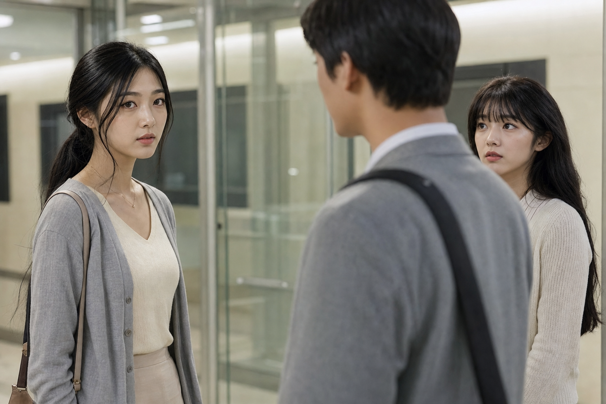

050. 확인하러 가는 길
금요일 저녁 여섯 시 사십 분.
용식은 초연을 조수석에 태우고 수원으로 향했다. 라디오는 켜져 있었지만 볼륨이 낮았고, 차 안에는 그 소리만 흐릿하게 채워져 있었다. 초연은 창밖을 보며 별다른 말을 하지 않았다.
[김용식] "학원 끝나면 근처에서 저녁 먹을까?"
[김초연] "일단 가 보고."
평소라면 좋다고 답했을 자리였다. 지금은 그 대답조차 조건부처럼 들렸다.
용식은 오늘 오후 내내 이 순간을 어떻게 넘겨야 할지 고민했다. 한서윤에게 미리 언질을 줄까 몇 번이나 문자를 썼다가 지웠다. 초연이 함께 간다는 사실을 알리면, 한서윤이 그날처럼 학원 자체를 나오지 않을 수도 있었다. 그러면 오늘은 조용히 넘어갈 수 있을 것 같았다. 그런데 동시에, 그렇게 피하는 것 자체가 언젠가는 들통날 임시방편이라는 것도 알고 있었다.
결국 그는 아무 문자도 보내지 않았다. 어느 쪽이 더 나은 선택인지 스스로도 확신이 서지 않았다.
신호에 걸려 차가 멈췄을 때, 초연이 문득 물었다.
[김초연] "학원 사람들, 다 아는 사이야?"
[김용식] "그냥 얼굴만 아는 정도지."
[김초연] "한서윤이라는 사람은?"
용식의 손끝이 핸들 위에서 살짝 굳었다.
[김용식] "왜 갑자기 또 그 얘기야."
[김초연] "그냥, 오늘은 좀 궁금해서."
신호가 바뀌었다. 용식은 액셀을 밟으며 대답을 피했다.
[김용식] "그냥 같은 반 사람이야."
[김초연] "그래."
더 이상의 대화는 없었다. 차는 조용히 수원 시내로 들어섰다.
학원 건물 앞에 도착해 주차를 하는 동안, 용식은 몇 번이나 폴더폰을 확인했다. 한서윤에게는 끝내 아무 문자도 보내지 못했다. 오늘 초연이 함께 온다는 사실을 그녀는 전혀 모르고 있었다.
[김초연] "가자."
초연이 먼저 차 문을 열고 내렸다. 용식은 짧게 숨을 고르고 그 뒤를 따랐다.
학원 로비는 평소와 다름없었다. 안내 데스크의 형광등, 벽에 붙은 시간표, 신발장에서 나는 옅은 냄새까지 익숙한 풍경이었다. 초연은 로비 안쪽 대기 의자에 앉겠다고 했다.
[김초연] "나 여기서 기다릴게. 끝나고 나와."
[김용식] "그래."
용식은 계단을 올라가며 몇 번이나 뒤를 돌아봤다. 초연은 의자에 앉아 가방을 무릎 위에 올려놓은 채, 핸드폰을 들여다보고 있었다. 딱히 초조해 보이지는 않았다. 그런데 그 차분함이 오늘따라 더 낯설게 느껴졌다.
계단을 올라가는 동안 용식의 머릿속에는 온갖 경우의 수가 스쳤다. 한서윤이 오늘따라 결석하면 좋겠다는 생각도 잠깐 들었다. 그러나 그 생각을 하는 자신이 스스로도 한심하게 느껴졌다. 언제까지고 피할 수만은 없는 일이었다.
강의실 문을 열자 익숙한 자리에 한서윤이 앉아 있었다. 지난주 결석 이후 처음 보는 얼굴이었다. 그녀는 그를 힐끗 보고는 다시 교재로 시선을 내렸다.
[김용식] "왔네."
[한서윤] "어."
짧은 대답이었다. 지난 밤 수원역에서의 냉기가 아직 그대로 남아 있었다. 용식은 자리에 앉으면서도 아래층 로비에 초연이 있다는 사실이 계속 마음에 걸렸다.
수업은 평소처럼 진행됐다. 한서윤은 필기를 하면서도 그와 눈을 마주치지 않았다. 용식도 굳이 말을 걸지 않았다. 그저 시간이 빨리 지나가기만을 바랐다.
교재 아래로 손끝이 스치는 일도, 귓속말도 없었다. 지난 몇 주간 쌓아 온 두 사람만의 규칙이 오늘은 완전히 사라진 것 같았다. 용식은 곁눈질로 그녀의 옆얼굴을 몇 번이나 살폈다. 표정에는 별다른 동요가 없었지만, 펜을 쥔 손끝이 평소보다 조금 세게 눌려 있었다.
쉬는 시간, 다른 수강생들이 자리를 비운 사이 한서윤이 먼저 입을 열었다.
[한서윤] "왜 이렇게 딴 데 정신이 팔려 있어."
[김용식] "아니야."
[한서윤] "아래층에 여자친구라도 와 있나 보네."
용식은 순간 말을 잃었다.
[한서윤] "농담이야. 왜 그렇게 놀라."
그녀는 그렇게 말하고 다시 교재로 시선을 내렸다. 농담이라고 했지만, 그 말이 정확히 사실을 짚고 있다는 게 더 불안했다. 용식은 아무 대답도 하지 못한 채 남은 수업 시간을 흘려보냈다.
수업이 끝나고 다들 짐을 챙기는데, 원장이 한서윤에게 다음 달 재등록 여부를 물었다.
[원장] "서윤 학생, 재등록할 거죠?"
[한서윤] "생각 좀 해 볼게요."
그 대답에 용식의 가슴이 내려앉았다. 정말 그만둘 생각인 모양이었다.
강의실을 나와 계단을 내려가는데, 한서윤이 그의 옆으로 다가왔다.
[한서윤] "오늘따라 왜 이렇게 조용해."
[김용식] "그냥."
[한서윤] "역시 뭔가 있네."
계단이 끝나고 로비가 눈에 들어왔다. 그 순간, 용식은 걸음을 멈췄다.
초연이 대기 의자에서 일어나 있었다. 시선은 정확히 계단 쪽을, 그리고 그 옆에 나란히 내려오는 한서윤을 향해 있었다.
한서윤도 그 시선을 눈치챘다. 걸음이 자연스럽게 느려졌다.
두 사람의 눈이 마주쳤다.
지난번처럼 모르는 사람인 척 스쳐 지나가는 일은 일어나지 않았다. 한서윤은 걸음을 멈췄다. 초연도 움직이지 않았다.

로비의 형광등 아래, 세 사람 사이에 정적이 내려앉았다. 안내 데스크에서 흘러나오던 라디오 소리마저 유난히 크게 들렸다.
용식은 두 사람 사이에 낀 채로, 무슨 말을 꺼내야 할지 알 수 없었다.
아무도 먼저 입을 열지 않았다.
용식은 초연과 한서윤을 번갈아 봤다. 두 사람 모두 그를 보지 않았다. 서로만을 마주 본 채였다.
로비 창문 밖으로 늦은 저녁 버스가 정류장에 멈추는 소리가 들렸다. 안내 데스크의 형광등이 낮게 웅웅거렸다. 그 사소한 소리들이 정적을 오히려 더 선명하게 만들었다.
한서윤이 먼저 시선을 돌렸다. 그러나 자리를 피하지는 않았다. 그녀는 그대로 서서, 마치 이 순간을 더 이상 피하지 않기로 결심한 사람처럼 보였다.
초연의 손끝이 가방끈을 꽉 쥐었다.
용식은 무슨 말이라도 꺼내야 한다는 걸 알면서도, 입이 떨어지지 않았다. 지금 이 침묵을 깨는 첫마디가 앞으로의 모든 걸 결정할 것 같았다.
그런데 그 첫마디를, 그는 끝내 찾지 못했다. 세 사람은 그렇게 로비 한가운데 멈춰 서 있었다. 누구도 먼저 움직이지 않는 한, 이 정적은 계속될 것 같았다.